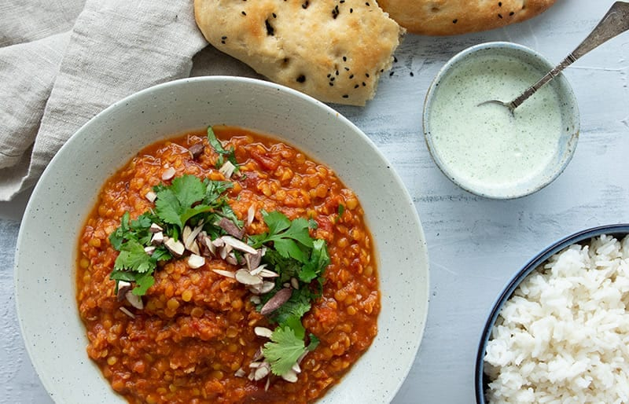

A delicious, simple dhal anyone can make.

Description
This version of dhal requires a bunch of spices, some tomates and lentils and that's it.
The prep work is chopping and blending. After that, the dhal just needs to simmer and it's ready to eat.
I suggest you wait until the next day before eating it, but it can be eaten right as it's done and it's
delicious.
Ingredients
- 6 cloves of garlic
- 2 tbsp finely chopped or shredded ginger
- 1 tbsp curry
- 1 tbsp cumin
- 1/2 tbsp coriander
- 1/2 tsp cardemum
- 1/2 tsp chili flakes
- 6 dl vegetable broth
- 200 g red lentils
- 800 g canned tomatoes
- 2 tbsp olive oil
Steps
- Heat the oil in a large pot. Once hot, add garlic and ginger and stir for 1 minute.
- Add curry, cumin, cardemum, coriander, chili flakes and sweat these for another minute while stirring.
- pour in the vegetable broth and tomatoes.
- Rinse the lentils with cold water and add them to the pot.
- Let it sit and simmer on low heat for 30-45 minutes.
- Add salt and pepper for taste and additional vegetable broth or water for texture.
- Bon appetite!